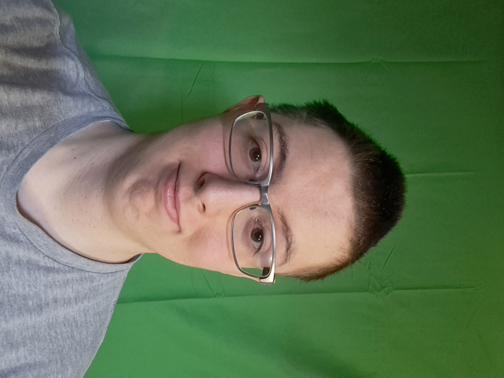

I was born in Logan Utah with two brain surgeries that lead up to having Autism Spectrum Disorder, raised in Rexburg ID 83440, but graduated highschool and still live in Ammon ID 83406. I graduated in 2020 when covid happened to cancel my rewards. I was born and still raised as a member of The Church of Jesus Christ of Latter-Day-Saints. I love to play roughly, but never competed in wrestling nor football. I play video games and I want to learn a lot of things, no matter how expensive, but BYU-I can only offer 1 major.
